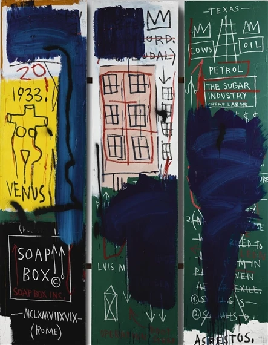

다운로드 필요
대표 화가
신디 셔먼, 《무제 영화 스틸 #21》 · 포스트모더니즘 · 미국·국제 현대미술
선정 이유 셔먼은 익숙하지만 실제로 존재하지 않는 영화 장면을 연기해 이미지가 여성 정체성을 만드는 방식을 드러냈다.
작가는 배우, 감독, 모델이 되어 전형적인 젊은 도시 여성의 한 장면을 연출한다. 특정 영화의 복사가 아닌데도 익숙하게 느껴진다는 사실이 대중매체의 성 역할이 관람자의 기억에 이미 학습되어 있음을 보여 준다.
Postmodernism
연결 학습
포스트모더니즘은 하나의 통일된 화풍보다 모더니즘의 단일한 진보와 순수성에 의문을 제기한 태도들의 묶음이다. 과거 양식, 대중 이미지, 정체성, 미술 제도를 인용하고 뒤섞으며 누가 의미와 권위를 만드는지 묻는다.
모더니즘이 매체의 순수성과 새로움을 강조했다면 포스트모더니즘은 혼합, 인용, 반복을 전략으로 삼는다. 현대미술은 그 이후까지 포함하는 더 넓은 시대 범주다.
흔한 오해: 현대적인 작품이나 모더니즘 다음에 나온 모든 작품을 포스트모더니즘이라 부르면 안 된다. 연대보다 권위·원본·진보에 대한 비판적 태도가 기준이다.
학술 참고: MoMA · Postmodernism
포스트모더니즘의 시대적 배경과 시각적 특징을 국가별 전개 속에서 살펴본다.
선정 이유 셔먼은 익숙하지만 실제로 존재하지 않는 영화 장면을 연기해 이미지가 여성 정체성을 만드는 방식을 드러냈다.
작가는 배우, 감독, 모델이 되어 전형적인 젊은 도시 여성의 한 장면을 연출한다. 특정 영화의 복사가 아닌데도 익숙하게 느껴진다는 사실이 대중매체의 성 역할이 관람자의 기억에 이미 학습되어 있음을 보여 준다.
더 볼 이유 레빈은 차용미술이 기존 이미지의 재촬영만으로 저자성과 소유권을 질문할 수 있음을 보여 준다.
유명 사진을 그대로 다시 촬영해 원본과 복제의 위계를 흔든 점에서 픽처스 제너레이션의 특징이 드러난다. 여성 작가의 위치에서 남성 중심 미술사의 권위를 겨냥한 것이 레빈만의 특성이다.
더 볼 이유 크루거는 차용미술이 광고의 사진과 문구를 이용해 성별·권력·소비의 언어를 비판하는 방식을 보여 준다.
흑백 얼굴 위의 붉고 흰 문장은 대중매체의 즉각적인 설득 방식을 그대로 사용한다. 관람자를 당신이라고 직접 부르며 이미지 소비의 책임을 되돌린 점은 크루거만의 특성이다.

선정 이유 바스키아는 거리의 기호, 흑인 역사, 해부학적 인물을 회화의 격렬한 표면에 결합해 미국 신표현주의의 독자성을 보여 준다.
인물, 왕관, 단어, 지운 흔적이 동시에 남아 화면이 완결된 이야기보다 충돌하는 기억처럼 작동한다. 회화의 귀환이 과거 양식의 반복이 아니라 인종, 권력, 도시 경험을 다시 쓰는 행위였음을 보여 준다.
더 볼 이유 키퍼는 신표현주의가 역사적 기억과 물질의 상처를 거대한 회화에 담는 방식을 보여 준다.
거친 표면과 상징적 글자는 감정과 서사를 되살리는 신표현주의의 특징을 드러낸다. 짚·납·재 같은 재료로 독일의 전쟁 기억과 폐허를 물질화한 점은 키퍼만의 특성이다.
더 볼 이유 바젤리츠는 신표현주의가 전후 독일의 기억과 거친 회화성을 뒤집힌 형상으로 다시 다룬 선구적 화가다.
인물을 거꾸로 놓아 서사보다 물감과 붓질을 먼저 보게 하는 점에서 회화의 물질성이 드러난다. 익숙한 독일적 모티프를 불편하고 분열된 이미지로 만든 점은 바젤리츠만의 특성이다.